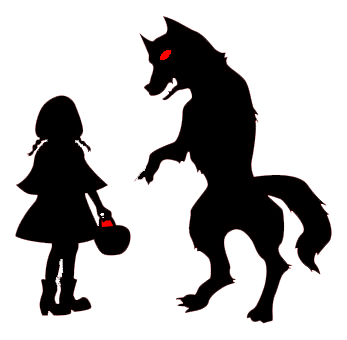

Alongside a copious amount of nursery rhymes with concealed and tragic origins, an abundance of fairy tales also have their share of gloomy backstories. Red Riding Hood is a fairy tale, encompassing the moral: Do not talk to Strangers or Stranger Danger. The book involves a small girl, known by the name of ‘Little Red Riding Hood’ travelling to her grandmother's house as she is sick. Before Little Red Riding Hood embarks upon her journey, her mother warns her to not talk to anybody. Once in the forest and going to her grandmothers, Little Red Riding Hood came upon a wolf. Forgetting what her mother had told her, Little Red Riding Hood started to talk with the wolf, and told him where she was going. The hungry wolf thought of an idea, and went to the grandmother's house before Little Red Riding Hood arrived. He ate the grandmother and dressed up in her clothes. When the little red riding hood arrives, she thinks the wolf is her grandmother. The wolf gets up and eats her, before which Little Red RIding Hood shrieks. A nearby lumberjack hears this shriek and hurries over into the house. He sees the wolf, and puts him upside down to which Little Red Riding Hood and her grandmother come tumbling out. They chase the wolf out of the forest, and the fairy tale ends by the wolf never being seen again.
Click here for more information
Little Red Riding Hood Fairy Tale |
|
In a very old version of the tale, the story of Red Riding Hood was very gruesome and foul. Once the wolf reaches the grandmother's house, instead of eating her, he cuts up the grandmother into a platter and pours her blood into a cup. Once the girl arrives, the wolf makes Red RIding hood eat her own grandmother, by telling Little Red Riding Hood that it is meat and wine. This tale has been changed and manipulated to the story we know today, due to its cannibalistic and ‘underage drinking’ themes.
The Brothers Grimm version of the tale, also included a sequel to the original Red Riding Hood. In this sequel, Little Red Riding Hood encounters another wolf, who she ignores. When the wolf attempts to break into the grandmother's house, she does not let the wolf in. Red and her grandmother proceed to lure the wolf into the chimney of the house with the smell of sausages. In the hearth, they place a large pot of boiling water, in which the wolf falls in and drowns.